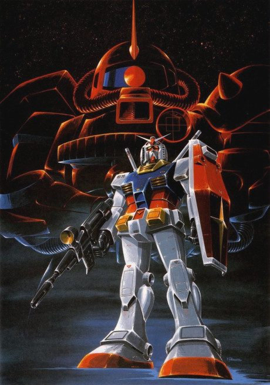
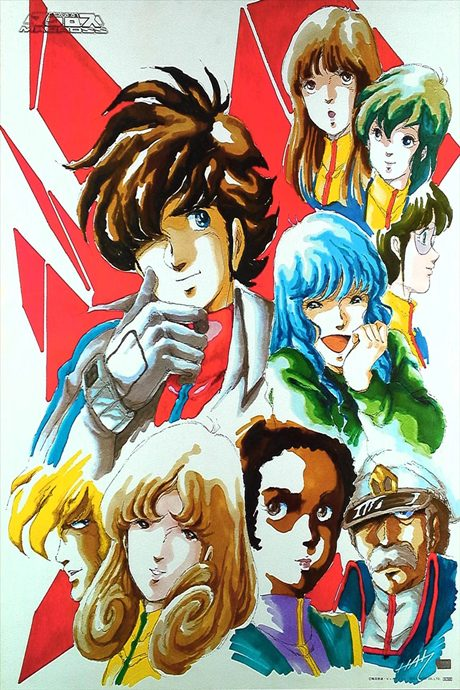
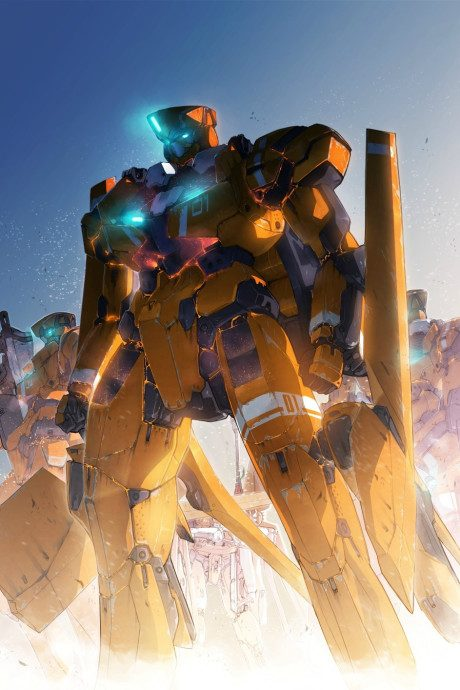
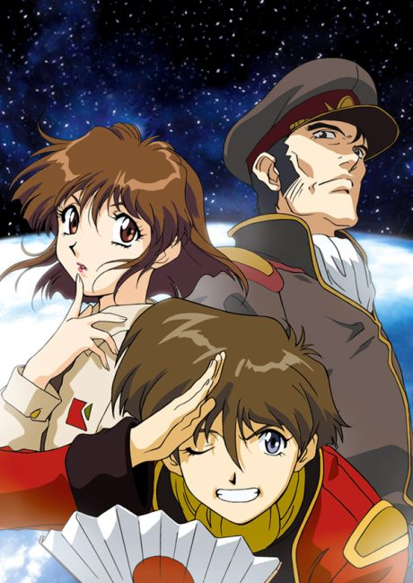

Mobile Suit Gundam
機動戦士ガンダム
When war reaches his space colony, Amuro, a teenage boy, climbs into the Earth Federation's new robot, the Gundam.
An original anime, so there's no book to continue with.
7.7AniList score
—Animeter, no votes yet
219episodes, 6 seasons
Rate it or report where you stopped
Filler
1 of 43 episodes are filler. Anime Filler List covers the first 43 of 219 episodes so far.
Episodes43
Canon42
Filler1
Mixed0
12345678910111213141516171819202122232425262728293031323334353637383940414243
CanonMixedFillerRecap
Skip list (filler episodes)
15Sources: Anime Filler List
More like Mobile Suit Gundam
 Original8.8
Original8.8

Original7.5
Original7.0 Original8.0
Original8.0
 Original7.7
Original7.7
 Original8.5
Original8.5
 Novel ahead8.3
Novel ahead8.3
 Original7.1
Original7.1
 Done9.0
Done9.0
 Manga Ch. 228.4
Manga Ch. 228.4

Unclear7.5 Original7.3
Original7.3